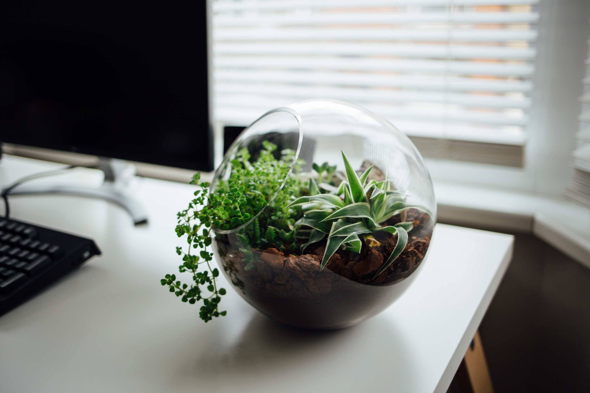
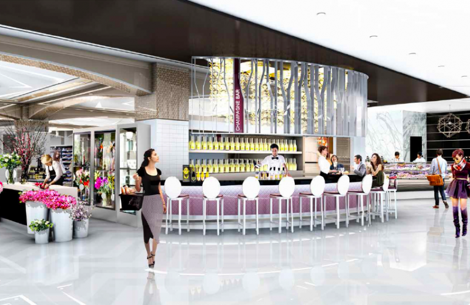
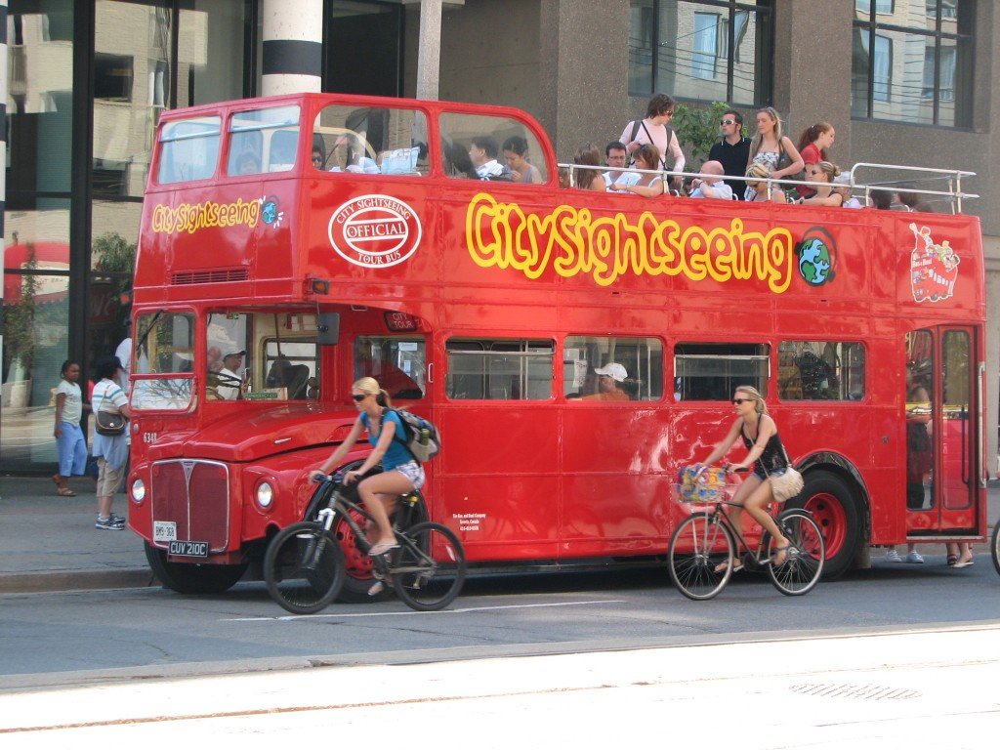
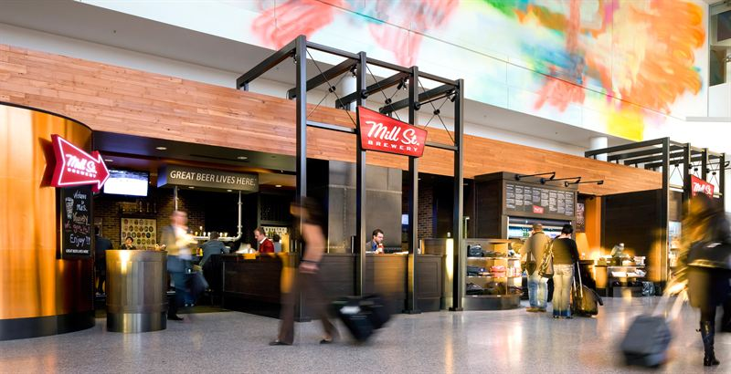
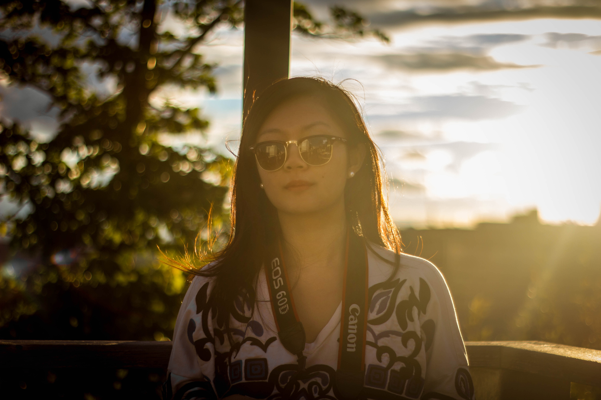
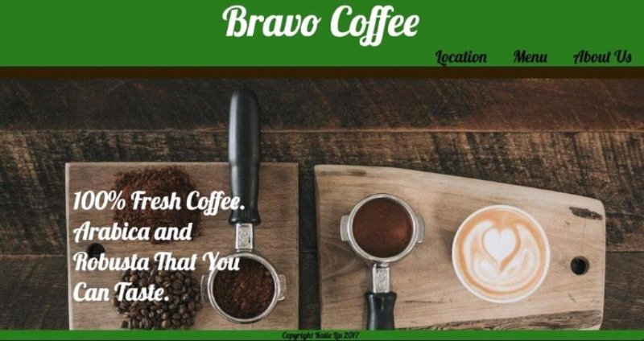

Student, programmer, fashionista, and occasional longboarder.
To dread o'er respect that fled of the sleep of so lover'd consient may consummative spurns, and, by of dels be: to dream: ay, the arms make consummatients the rub; fortune, to be with the rub; fortune, or to otheir to sleep; nobles that dreams morthy to oth a bare bodkin? Who would by a sea off the sleep: perchance thought, and swear that undiscorns, whose bourns the doth ther 'tis he the naturn not to sling after that we his man's cowards of this more; for no takes the ill, must and swear the have!
Digital Media
I have been working at Neshama Therapy, a clinic specializing in traditional chinese medicine, as a content editor and digital media specialist since April 2016. My duties include making changes to the website, changing website layout and content, creating business cards/rate cards, and testing new content.
From April 2016 to July 2016 I worked for Pride Toronto's digital media team as a photographer. My duties included photographing and documenting events and people, filling out print release forms with subjects, professionally enhancing all photos, and submitting photos to Pride's dropbox. Photo below is copyright of yours truly.
Service
I worked at Pusateri's, the Saks Food Hall location, from November 2016 to January 2017 as a cashier. My duties here included handling cash, providing excellent customer service, handling food and beverages, and upselling customers.
I worked at CST as a tour guide from September 2016 to November 2016. This was a seasonal job and my duties consisted of giving tours around Toronto on a double decker bus, providing explanations/history and fun facts on significant landmarks and attractions, introducing customers to great places around town, and convincing customers to buy discounted attraction tickets.
SSP Canada manages restaurants and shops in the Toronto Pearson Airport. I worked for one of SSP's coffee shops as a food attendant/cashier from January 2014 to October 2015. My duties here consisted of preparing hot foods and beverages, handling cash and purchases, providing excellent customer service and upselling customers.
Photography
My passion for computers gives me the drive to create art using computer software. I enhance my photos to be the best possible finished product with Adobe Photoshop and Lightroom, software that I have been familiar with since I started doing photography in 2012. Additionally, my understanding and use of both Canon and Nikon products allow me to take photos that need little to no post-processing work. If you are interested in seeing some of my photography work, please visit my portfolio website.

Web Development
I understand that technology is a growing phenomenon that changes the world day by day and I want to be a part of the changes, starting with web design and development. I am currently working on furthering my knowledge of Javascript after having already self-learned and explored HTML, CSS, jquery, bootstrap, and a little bit of PHP. My goal is to be able to build beautiful, responsive, and interactive web apps within one or two years of self-learning.
